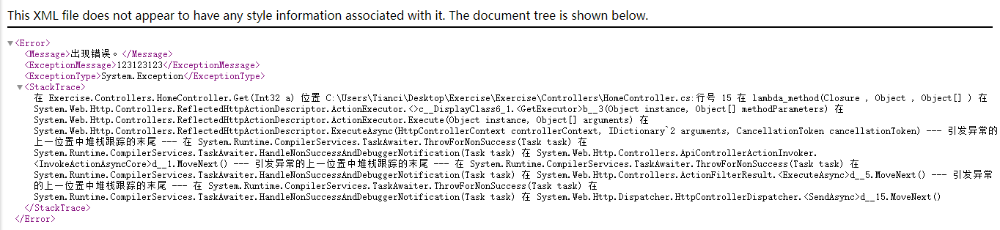
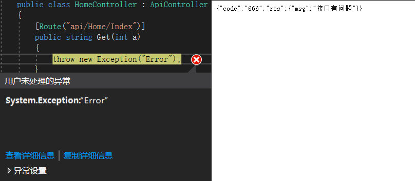

# 记录一下 WebAPI 的全局异常处理
# 通常接口出现一些小错误，页面会返回一堆看不懂的代码
# 这对于我们寻找错误并没有什么太大的帮助，反而看着很难受

# 遇到这种情况我们可以写一个全局异常过滤器，接口报错直接跳到过滤器
# 首先新建一个 ActionFilter 类，继承至 ExceptionFilterAttribute
# 代码如下
/// <summary> | |
/// Remark: 过滤掉 WebApi 接口的异常，统一返回异常信息 | |
/// </summary> | |
public class ActionFilter : ExceptionFilterAttribute | |
{ | |
public override void OnException(HttpActionExecutedContext context) | |
{ | |
// 记录错误日志 | |
//LogHelper.Error($"{context.Exception }", context.Request.RequestUri.AbsolutePath); | |
// 篡改 Response | |
context.Response = new HttpResponseMessage(HttpStatusCode.OK) | |
{ | |
Content = new StringContent(JsonConvert.SerializeObject(new | |
{ | |
code = "520", | |
res = new | |
{ | |
msg = "接口有问题" | |
} | |
})) | |
}; | |
} | |
} |
# 然后在 WebApiConfig 类里面全局配置
public static class WebApiConfig | |
{ | |
public static void Register(HttpConfiguration config) | |
{ | |
// Web API 配置和服务 | |
// Web API 路由 | |
config.MapHttpAttributeRoutes(); | |
config.Routes.MapHttpRoute( | |
name: "DefaultApi", | |
routeTemplate: "api/{controller}/{id}", | |
defaults: new { id = RouteParameter.Optional } | |
); | |
// 全局注册异常过滤器 | |
config.Filters.Add(new ActionFilter()); | |
} | |
} |
# 只要接口出现异常就会跳到这个地方，返回我们定义的信息

# 可以看到，尽管接口已经抛出异常了，但是网页返回的信息依旧是我所定义的
# 错误信息可以打印到日志，避免接口信息泄露，具体打印日志下期再说
# 学业繁忙，告辞